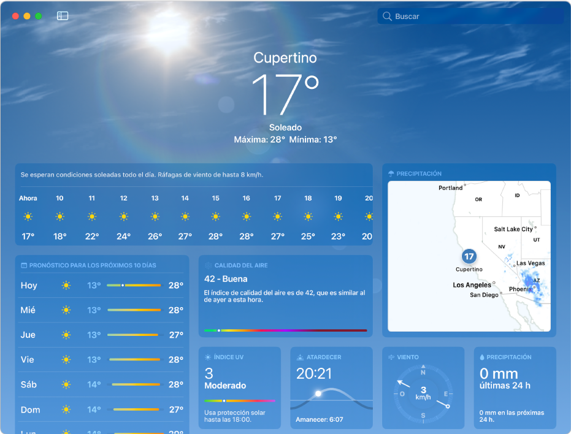
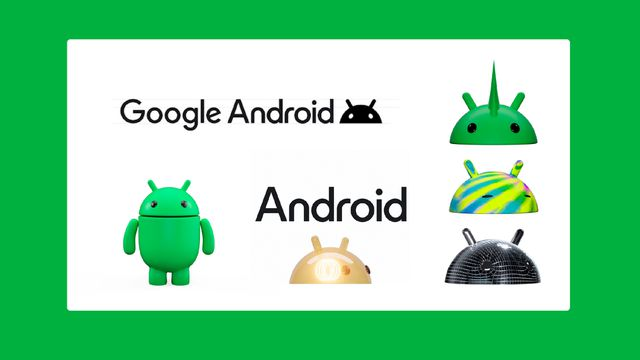

Breve Introdução
Olá! Bem-vindo ao meu portfólio. Aqui você encontrará informações sobre meus projetos,
habilidades e experiências profissionais. Sinta-se à vontade para explorar e conhecer mais sobre o meu trabalho.
Meu nome é Domingos Nzinga Miala, sou estudante de informática. Frequento a Escola Perpétuo Socorro.
Desde 2025, e estou no 10º ano. Tenho interesse em programação, desenvolvimento web e design de interfaces.
Ao longo do meu percurso académico,
participei em diversos projetos que me permitiram aprimorar minhas habilidades técnicas e criativas.
Percuso Académico e Interesses
Escolha do Curso
Ao príncipio a escolha foi na área política e de agricultura
mas quando descobrir que a informática é mais do que trabalhar
com pacotes office.
A escolha do curso de informática foi motivada pelo meu interesse em tecnologia, inovação e a capacidade de programar máquinas.
Acredito que a área de informática oferece inúmeras oportunidades para aprender e crescer profissionalmente.
Disciplinas e temas tecnológicos favoritos
Entre as disciplinas que mais me interessam, destaco as que abordam programação, desenvolvimento web e design de interfaces.
Estou sempre em busca de novos desafios que me permitam aprimorar minhas habilidades e conhecimentos na área de informática.
Hobbies e interesses
Além do meu interesse em informática, também tenho hobbies e interesses que me ajudam a relaxar
e a manter um equilíbrio saudável entre trabalho e lazer.
Fora do âmbito académico, sou cristão, pertecendo à Igreja Kimbaguista, tenho estado sempre a estudar e aprender
mais competências e habilidades na área de tecnologia, aprendendo continuamente a trabalhar com as novas tecnológias/ferramentas.
Projetos e Experiências
Projetos Académicos
Durante o meu percurso académico, participei em diversos projetos que me permitiram aplicar
os conhecimentos adquiridos em sala de aula.
Alguns dos projetos mais relevantes incluem:




Experiências Profissionais
Embora ainda esteja no início da minha carreira, tive a oportunidade de realizar trabalhos e projetos voluntários que me proporcionaram experiências valiosas.
Essas experiências me ajudaram a desenvolver habilidades práticas e a compreender melhor o mercado de trabalho na área de informática.
Contactos
Se deseja entrar em contato comigo, sinta-se à vontade para enviar um e-mail ou conectar-se comigo através das redes sociais.